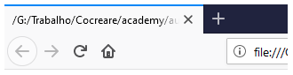

Se escrevermos, salvarmos e abrirmos no navegador a estrutura de exemplo dada no capítulo anterior, teremos algo mais ou menos assim:
Repare que o título na aba do nosso navegador está exibindo o caminho do arquivo. Feio, não é? Um passo importante para a experiência do usuário final de qualquer produto digital, seja um site, app ou sistema é garantir que ele não se sinta perdido enquanto navega por ele, especialmente em aplicações mais complexas. Um título como o da imagem acima viola diretamente esse princípio: se o usuário não consegue sequer identificar pela aba de navegação que site ou que área ele está acessando, como esperar que ele entenda o restante do contexto da página? É aqui que a tag <title> entra. Ela é uma tag super simples, que coloca o texto dentro dela como o título da nossa página.
Assim, se trocarmos o código para:
<html>
<head>
<title>Curso HTML - Exemplo</title>
</head>
<body>
</body>
</html>
Nossa página passa a ficar assim:
Melhor, não?